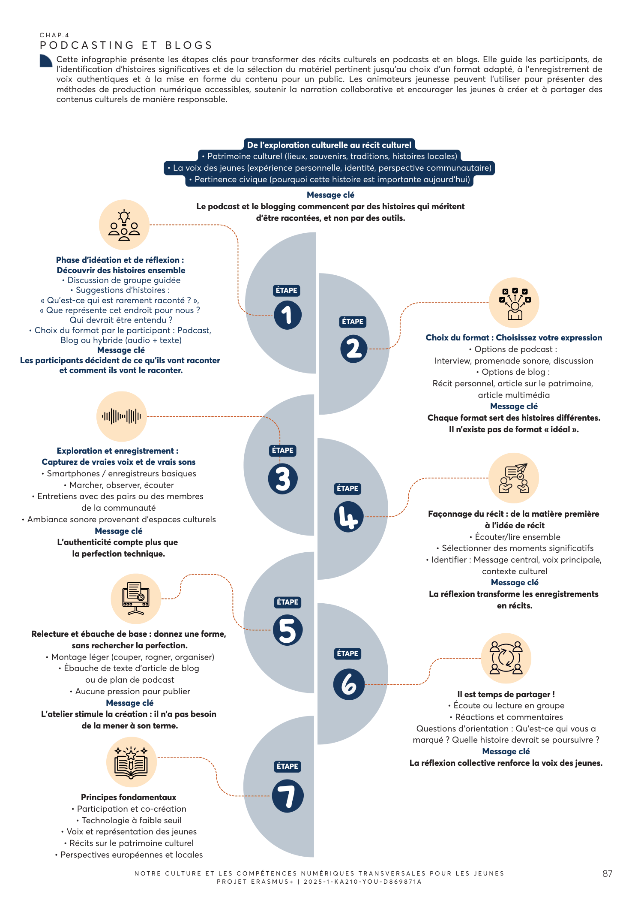
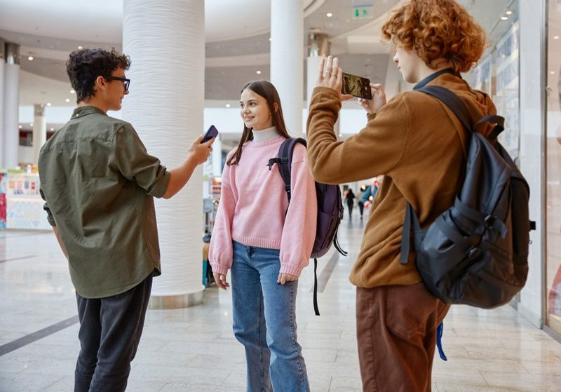

R É S U M É I N F O G R A P H I Q U E

Résumé visuel du chapitre : cliquez pour agrandir ou télécharger.
Télécharger l’infographie (PDF)Introduction
Ce chapitre présente le podcast et le blog comme outils de narration numérique que les animateurs jeunesse peuvent utiliser pour sensibiliser les jeunes au patrimoine culturel, à la participation citoyenne et à l’expression créative. Grâce à des technologies accessibles et des méthodes participatives, les jeunes apprennent à recueillir des témoignages, à documenter leurs expériences culturelles et à partager leurs récits avec un public plus large.
En s’appuyant sur le travail narratif mené au chapitre 3, ce chapitre passe des récits culturels structurés à la production médiatique concrète et au partage responsable, en utilisant les podcasts et les blogs comme outils accessibles pour donner vie à ces histoires.
DigComp 3.0 : lien avec le chapitre
Ce chapitre contribue principalement aux domaines « Création de contenus numériques » et « Communication et collaboration », en aidant les jeunes à créer, adapter et partager des contenus culturels numériques de manière responsable.

Objectifs d’apprentissage
À la fin de ce chapitre, les animateurs jeunesse seront capables de :
- comprendre le rôle des podcasts et des blogs dans la participation civique des jeunes et la narration culturelle ;
- présenter les bases techniques du podcasting et du blogging ;
- animer des ateliers créatifs où les jeunes produisent des histoires culturelles audio ou écrites ;
- soutenir les jeunes dans la documentation du patrimoine culturel par le biais d’entrevues, d’enregistrements sonores et de récits ;
- relier le travail numérique auprès des jeunes à la valorisation du patrimoine culturel et au dialogue communautaire.
Sections
- Section 1 | Expression numérique et voix des jeunes
- Section 2 | Fondements techniques
- Section 3 | Outils pratiques & Activités
- Section 4 | Études de cas et pratiques inspirantes
Section 1 · Expression numérique et voix des jeunes
Pourquoi utiliser les podcasts et les blogs dans le travail auprès des jeunes ?
Parce qu’elles offrent aux jeunes un moyen simple de partager des histoires, des idées et des expériences. Les podcasts et les blogs offrent aux jeunes des moyens concrets de produire et de partager des histoires grâce à des outils numériques accessibles. Contrairement aux étapes précédentes de la narration (voir chapitre 3), ces formats privilégient l’enregistrement des voix, la structuration du contenu en vue de sa publication et la diffusion auprès d’un public. Les podcasts sont particulièrement captivants car ils reposent sur la conversation et le récit. Les jeunes peuvent interviewer d’autres personnes, documenter des lieux de leur quartier ou aborder des sujets qui leur tiennent à cœur. Partout en Europe, plusieurs projets jeunesse ont utilisé le podcast pour renforcer les compétences numériques tout en encourageant leur participation à la vie communautaire et au dialogue démocratique. Les blogs complètent les podcasts en offrant un espace de réflexion écrite et de narration multimédia. Grâce aux articles de blog, les jeunes peuvent documenter les traditions culturelles, partager leurs points de vue personnels et préserver la mémoire collective. La création de podcasts ou de blogs permet également de développer des compétences importantes. Les participants apprennent à organiser l’information, à structurer des récits, à écouter attentivement les autres et à communiquer de manière responsable dans l’espace public. Pour les animateurs jeunesse, ces outils offrent un moyen pratique d’allier travail numérique auprès des jeunes, narration et exploration du patrimoine culturel, tout en encourageant les jeunes afin qu’ils deviennent des voix actives dans leurs communautés.
Pertinence pour notre culture
Pour le projet Ourculture, cette information souligne le potentiel des podcasts et des blogs comme outils de sensibilisation au patrimoine culturel et de participation des jeunes. En proposant des ateliers pratiques de podcast et de blog, ce projet va bien au-delà de l’apprentissage des compétences techniques ; il encourage l’émergence d’une génération de jeunes conteurs capables de saisir, d’interpréter et de partager des récits culturels. Il enrichit et dynamise le travail auprès des jeunes en intégrant les plateformes numériques à un apprentissage créatif et participatif, et il renforce le rôle du numérique dans ce travail, permettant aux jeunes de devenir non seulement des consommateurs de médias, mais aussi des acteurs de la culture et du dialogue citoyen.
Section 2 · Fondements techniques
Les éléments techniques présentés ici ne sont pas destinés à être maîtrisés, mais à soutenir une production médiatique simple et accessible, en s’appuyant sur des histoires déjà développées (voir chapitre 3). Pour animer efficacement des ateliers de podcasting et de blogging destinés aux jeunes, il est essentiel d’établir des bases techniques solides, accessibles, adaptables et alignées sur les objectifs du travail numérique auprès des jeunes. Si la créativité et l’expression restent essentielles, les compétences techniques pratiques aident les participants à transformer leurs idées en contenu concret et partageable.
2.1.De l’histoire au format : Préparation de la production
Avant d’utiliser les outils, les participants bénéficient d’une base conceptuelle simple :
- Formats de podcasts : interview, récit, discussion, documentaire.
- Formats de blog : récits personnels, réflexions, articles multimédias, séries thématiques.
- Sensibilisation du public : à qui s’adresse ce contenu ? Que souhaitez-vous qu’il ressente ou apprenne ?
- Éléments de base de la planification : notez quelques points clés avant l’enregistrement ou l’écriture.
Cette étape aide les participants à traduire leurs idées d’histoires existantes en formats prêts pour l’enregistrement ou la publication.
2.2.Principes de base et matériel d’enregistrement
Une bonne qualité audio ne nécessite pas d’équipement coûteux : des outils simples et une utilisation réfléchie suffisent. C’est aussi l’occasion d’adopter des pratiques durables et responsables.
Utilisez ce que vous avez déjà : smartphones, casques audio basiques avec microphone ou appareils partagés.
- Évitez les achats inutiles : privilégiez la réutilisation, l’emprunt ou l’achat d’équipements à bas prix.
- Choisissez un endroit calme : réduisez le bruit ambiant plutôt que de compter sur un montage ultérieur.
- Parlez clairement et d’une voix posée : restez à une distance constante (environ une main du micro).
- Maintenez le microphone stable : évitez les bruits de manipulation ou les mouvements pendant l’enregistrement.
- Testez avant d’enregistrer : enregistrez un court extrait et écoutez-le.
- Utilisez des formats compressés lorsque c’est possible : les fichiers plus petits sont plus faciles à stocker et à partager.
- Sauvegardez judicieusement : conservez les fichiers essentiels, mais évitez les copies inutiles.
- Partagez de manière responsable : ne téléchargez que les versions finales ou utiles.
L’environnement d’enregistrement est essentiel à la perception de votre contenu
La qualité sonore est souvent plus importante que la qualité d’image, car le public est moins tolérant face à un son de mauvaise qualité. Privilégiez toujours les espaces calmes, réduisez les bruits de fond (circulation, voix, vent) et évitez l’écho autant que possible, car ces derniers sont difficiles à gérer.
Le positionnement du microphone joue également un rôle clé. Maintenez une distance constante et rapprochée (environ la largeur d’une main), parlez clairement et à un rythme régulier, et évitez les mouvements brusques, de toucher le micro ou de parler trop fort ou trop doucement. La familiarité avec les outils permet aux participants d’expérimenter en toute confiance. Pour les ateliers destinés aux jeunes, les coordinateurs peuvent privilégier la simplicité : l’utilisation d’outils que les participants possèdent déjà (comme des téléphones) facilite l’accès et favorise l’inclusion.
Produire avec intention est un principe clé de ce chapitre. Il est recommandé aux participants de n’enregistrer que l’essentiel, d’éviter la production de données superflues et de privilégier la qualité à la quantité. Cette approche reflète le principe introduit au chapitre 3 - « Enregistrer moins, mieux raconter » - et favorise des pratiques médiatiques plus durables et réfléchies.
2.3.Logiciels et plateformes
Pour transformer les enregistrements bruts en contenu partageable, les participants ont besoin d’accéder à un logiciel de base. Outils de montage audio : solutions gratuites comme Audacity, GarageBand ou éditeurs en ligne pour découper, nettoyer et combiner des clips. Plateformes de blogs : WordPress, Blogger, Medium ou tout autre CMS gratuit et facile d’utilisation. Hébergement et distribution : comprendre comment les podcasts sont publiés (flux RSS, sites d’ancrage) et comment les blogs sont mis à jour et partagés. La présentation de ces plateformes par le biais d’une démonstration simple et d’une exploration guidée contribue à réduire l’anxiété liée à la technologie et renforce l’autonomie numérique. Il est également important de mettre les participants en relation avec les ressources locales qui soutiennent déjà la création de contenus médiatiques : centres de jeunesse, radios communautaires, laboratoires multimédias scolaires, etc.
Les associations locales offrent souvent un accès à du matériel, des studios d’enregistrement ou des plateformes de publication. Collaborer avec ces structures (comme les webradios des centres de jeunesse ou les pôles numériques locaux) permet aux jeunes d’expérimenter en situation réelle, de bénéficier des conseils de professionnels et de constater comment leurs contenus peuvent toucher un public réel. Pour les animateurs et animatrices jeunesse, nouer des partenariats avec ces acteurs locaux renforce les réseaux de soutien et rend les projets plus durables et percutants.
2.4.Outils de narration et de structure narrative
Les compétences techniques doivent soutenir la narration (voir le chapitre 3 pour une analyse plus approfondie des structures narratives et des approches créatives). Cette section porte sur l’organisation et le montage techniques du contenu afin de rendre le récit clair et captivant.
- Storyboards (audio ou visuels) : planification simple, étape par étape, des scènes ou séquences (introduction, contenu principal, conclusion)
- Guides d’entretien et de rédaction : brèves indications pour structurer les enregistrements et éviter de manquer des points clés
Pour de bonnes pratiques d’entretien, il existe une liste de contrôle pratique à suivre pour chaque phase :
- Préparez 4 à 6 questions ouvertes (évitez les questions fermées, qui induisent des réponses par oui ou par non) (voir chapitre 2).
- Commencez par des questions simples et accessibles avant d’aborder des sujets plus complexes.
- Soyez poli et créez une atmosphère sûre et respectueuse.
- Écoutez activement : restez silencieux et laissez la personne finir de parler.
- N’interrompez pas ; laissez place aux pauses (elles mènent souvent à des réponses plus riches).
- Pour aller plus loin : demandez « pourquoi ? », « comment ? », « pouvez-vous donner un exemple ? »
- Maintenez le contact visuel et montrez de l’intérêt (hochez la tête, réagissez naturellement).
- Enregistrez dans un endroit calme et vérifiez le son avant de commencer.
- Remerciez la personne et concluez l’entretien clairement.
- Les exercices de scénarisation peuvent guider les participants dans la structuration logique du contenu et de manière captivante.
- Pour les blogs, l’intégration d’images, de cartes, de citations et de liens hypertextes favorise une lecture multimodale.

2.5.Collaboration et flux de travail
Le podcasting et le blogging sont généralement des activités collaboratives qui nécessitent une coordination entre les participants. L’établissement d’un flux de travail clair contribue à garantir un travail d’équipe efficace et une production de contenu fluide sont essentiels. L’utilisation d’un dossier partagé en ligne pour les documents du projet (enregistrements audio, textes et images) facilite l’accès et l’organisation collectifs. Des conventions de nommage claires permettent aux participants d’identifier et de retrouver facilement les documents. Pour éviter les conflits de versions, il est conseillé qu’une seule personne modifie un fichier à la fois, tandis que les autres consultent la version la plus récente. Le maintien de l’historique des versions, plutôt que la suppression des brouillons précédents, permet aux équipes de suivre les modifications et de préserver le travail antérieur. Le partage régulier des brouillons au sein du groupe favorise également la réflexion collaborative et les retours constructifs tout au long du processus de production.
2.6.Considérations éthiques et d’accessibilité
La création de contenu pour les podcasts et les blogs implique une responsabilité envers les personnes, les histoires et les communautés représentées. Des considérations éthiques doivent donc guider l’ensemble du processus de production. L’autorisation doit être obtenue avant l’enregistrement ou la publication d’entretiens, de témoignages ou de récits personnels, et les participants doivent être informés des modalités et du lieu de diffusion du contenu. L’utilisation d’un langage respectueux et inclusif est essentielle pour garantir que les récits représentent fidèlement et de manière responsable les individus et les communautés.
Références européennes : demander l’autorisation avant de publier les documents des participants
- Le Règlement général sur la protection des données (RGPD) établit des règles relatives à la collecte, au stockage et au partage des données personnelles.
- Les directives nationales en matière de travail et d’éducation des jeunes complètent souvent le RGPD par des règles spécifiques pour les mineurs.
- Principe de base : ne collecter que ce qui est nécessaire, le stocker en toute sécurité et l’utiliser de manière transparente.
Il est fortement recommandé de fournir un modèle de formulaire de consentement
simple et adapté à votre activité, afin d’aider les animateurs jeunesse à garantir le respect des normes éthiques et légales et assurer la conformité tout en protégeant les participants. Lors de l’intégration de musique, d’images ou d’autres médias, il convient de privilégier les documents libres de droits ou sous licence ouverte, en mentionnant correctement les créateurs originaux. L’accessibilité est également un aspect important d’une production médiatique responsable.
Un enregistrement audio clair, un discours compréhensible et un texte bien structuré contribuent à rendre le contenu accessible à un public plus large.
En quoi cela est important pour notre culture
Pour le projet Ourculture, axé sur le patrimoine culturel et le travail numérique auprès des jeunes, ces fondements techniques sont essentiels. Cela permet aux participants d’être non seulement créatifs, mais aussi capables de réaliser et de partager des récits qui comptent. L’association d’outils accessibles, de processus structurés et d’un cadre narratif structurant permet aux jeunes de contribuer à la préservation du patrimoine culturel, offrant ainsi un écho local et international. En démystifiant la technologie et en l’inscrivant dans une démarche créative et citoyenne, le projet place l’expression numérique des jeunes au carrefour de la préservation du patrimoine, de la participation démocratique et du récit communautaire, en accord avec les valeurs d’Erasmus+ et en produisant des résultats concrets qui peuvent continuer d’évoluer après la fin des activités pilotes.
Parallèlement, la production de podcasts et de blogs implique une communication et une représentation publiques. Ces activités invitent les jeunes à réfléchir à la responsabilité, à une narration éthique et à un dialogue respectueux dans l’espace numérique. Il convient également de les encourager à prendre conscience du pouvoir des images et des médias dans la formation des perceptions, ainsi que de l’importance de représenter fidèlement les personnes et les situations. Ancrer le contenu dans des expériences réelles, des enquêtes de terrain et des témoignages authentiques contribue à garantir que les récits restent pertinents, crédibles et respectueux. Ces dimensions sont directement liées aux principes de la citoyenneté numérique, qui sont approfondis au chapitre 5.
Section 3 · Outils pratiques & Activités
Collecte d’informations sur la culture
Ces activités sont conçues pour les jeunes et peuvent être adaptées à différents contextes européens de travail de jeunesse. Elles favorisent l’utilisation du podcast et du blog comme outils de transmission du patrimoine culturel, de participation citoyenne et d’expression créative. Elles s’appuient sur les méthodes d’exploration présentées au chapitre 2 (observation, entretiens, travail de terrain). Ces approches sont ici utilisées avec un nouvel objectif : recueillir de la matière et la transformer en contenu pour podcasts et blogs.

Section 4 · Études de cas et pratiques inspirantes
Études de cas réussies en Hongrie
Avant de tester les activités proposées, les études de cas suivantes permettent de mieux comprendre le contexte. Elles illustrent comment des activités similaires ont été mises en œuvre dans des situations réelles en Hongrie, en décrivant les difficultés rencontrées et les résultats obtenus. Ces exemples prouvent que les initiatives culturelles financées par les projets Erasmus+ peuvent transformer le quotidien de nombreux jeunes et susciter des discussions concrètes, les aider à surmonter les problèmes de la vie et à réussir au niveau national et international.
4.1. Étude de cas 1 - La voix des jeunes
Projet de journalisme jeunesse Erasmus+
Aperçu du projet :
« La Voix des Jeunes » est un projet Erasmus+ cofinancé par des partenaires hongrois, irlandais et estoniens. Il vise à former les jeunes au journalisme et à la création de contenus médiatiques. L’initiative a pour objectif d’aider les jeunes participants à développer leurs compétences en la matière - écriture, blogging, création audio/vidéo, narration numérique et esprit critique - afin qu’ils puissent s’exprimer et contribuer au dialogue social.
Objectifs et activités :
- former les jeunes (15 à 30 ans) aux compétences journalistiques, notamment Journalisme éthique, évaluation critique des médias et conception de contenu ;
- développer une plateforme en ligne multilingue proposant des leçons interactives, Fiches de travail et outils d’évaluation pour soutenir l’apprentissage ;
- faciliter les ateliers et les rencontres transnationales, comme les sessions conjointes à Dublin, où des participants hongrois collaborent avec leurs homologues des pays partenaires pour examiner et améliorer les productions médiatiques ;
- produire du contenu co-créé avec la participation des jeunes, y compris des articles de blogs, interviews, tribunes libres et contenus journalistiques.
Contenu et approche méthodologique
Le projet associe l’éducation aux médias à l’apprentissage par l’expérience, permettant aux jeunes participants de développer des compétences journalistiques par la pratique.
Ce cours initie les participants aux fondamentaux du journalisme, notamment la sélection des sujets, le reportage éthique, la vérification des faits et la construction narrative. Ils explorent différents formats médiatiques tels que les articles de blog, les interviews, les podcasts et les vidéos courtes, et apprennent à adapter leurs reportages aux différentes plateformes numériques. La méthodologie repose sur l’apprentissage participatif et collaboratif. Les jeunes travaillent en équipe pour effectuer des recherches, mener des interviews et produire du contenu médiatique portant sur des enjeux sociaux, la culture et la vie communautaire.
Les ateliers internationaux favorisent les échanges interculturels, permettant aux participants d’analyser le travail de leurs pairs et de réfléchir à différentes perspectives narratives. Des outils numériques soutiennent l’apprentissage grâce à une plateforme en ligne proposant des supports de formation, des exercices et des outils d’évaluation. Cette approche mixte - combinant ateliers, apprentissage en ligne et production collaborative - encourage la participation active et permet aux participants d’apprendre par la pratique tout en développant une conscience critique de l’influence des médias sur les récits publics.
Groupe cible
- Les jeunes de 15 à 30 ans intéressés par les médias, la narration, le numérique et la création de contenu.
- Les jeunes ayant un accès limité à l’éducation aux médias ou au journalisme.
- Des jeunes motivés à exprimer des problématiques communautaires, des sujets sociaux ou expériences culturelles.
- Les participants impliqués dans des organisations de jeunesse, des écoles ou des activités d’apprentissage informelles.
- Des jeunes issus de différents horizons européens, encourageant les échanges interculturels.
Éléments clés de l’éducation numérique et médiatique
- Comprendre les principes du journalisme responsable, notamment l’éthique du reportage et la vérification de l’information.
- Développer une culture médiatique critique, notamment en analysant les biais, la crédibilité et la représentation dans les médias.
- Apprendre les techniques de narration numérique à travers les blogs, les interviews, les podcasts et le contenu multimédia.
- Utiliser les outils numériques et les plateformes en ligne pour publier, partager et collaborer sur des projets médiatiques.
- Pratiquer une communication en ligne responsable et une représentation respectueuse des communautés et des cultures. Renforcer les compétences de production collaborative, notamment le retour d’information entre pairs et le travail d’équipe éditorial.
Impact
Ce projet a permis aux jeunes participants de gagner en confiance pour exprimer leurs idées à travers les médias et le récit. En créant des blogs, des interviews et du contenu multimédia, ils ont développé des compétences pratiques en journalisme et en numérique, tout en réfléchissant aux enjeux communautaires et aux perspectives culturelles. Le projet a également renforcé la collaboration entre les jeunes de différents pays, favorisant le dialogue interculturel et la participation active aux débats publics.
Pourquoi c’est important :
Ce projet démontre comment l’éducation aux médias et aux médias numériques peut être directement intégrée dans des programmes structurés d’animation jeunesse Erasmus+. En favorisant la pensée critique parallèlement aux compétences pratiques en matière de médias, le projet « La Voix des Jeunes » illustre comment les jeunes acquièrent les moyens de représenter leurs communautés et d’interpréter les récits culturels pour un public plus large. Il allie travail numérique auprès des jeunes et participation citoyenne créative, en parfaite adéquation avec les objectifs de transmission du patrimoine culturel et d’expression des jeunes.
4.2. Étude de cas 2 - Mustár FM : Radio jeunesse et médias audio
Aperçu du projet
Mustár FM est une station de radio communautaire pour les jeunes basée à Nyíregyháza, en Hongrie, qui accueille régulièrement des volontaires du Corps européen de solidarité (CES). Grâce à ces missions, des jeunes de différents pays européens participent activement à la production de contenus audio, notamment des émissions de radio, des interviews, des récits culturels et des émissions à vocation communautaire. Cette initiative utilise la radio et les formats audio comme outils d’expression pour les jeunes, d’apprentissage interculturel et de participation civique.
Objectifs et activités
- Impliquer de jeunes bénévoles dans la création de contenu audio, notamment en animant des émissions de radio, en enregistrant des interviews et en produisant des programmes thématiques liés à la culture, à la langue et aux questions de jeunesse.
- Développer des compétences pratiques en narration, communication et audio production par la participation active plutôt que par la formation formelle.
- Encourager les échanges interculturels, les bénévoles partageant des histoires de leurs pays d’origine tout en s’immergeant dans la culture et la vie communautaire hongroises locales.
- Soutenir les initiatives menées par les jeunes, où des bénévoles conçoivent et mettent en œuvre leurs propres projets avec les conseils de mentors locaux.
Activités et résultats
- Émissions radiophoniques régulières produites ou coproduites par de jeunes bénévoles.
- Entretiens et discussions audio axés sur l’identité culturelle et européenne.
- Diversité et sujets liés à la communauté locale.
- Processus d’apprentissage informels qui permettent aux bénévoles de développer progressivement leurs compétences.
- Confiance en soi à l’oral, dans l’enregistrement et capacité narrative.
Contenu et approche méthodologique
Mustár FM utilise la radio communautaire comme un environnement d’apprentissage pratique où les jeunes développent leurs compétences médiatiques par la participation active.

Les bénévoles participent à la production d’émissions de radio, d’interviews et de reportages culturels, en explorant progressivement des rôles tels que présentateur, intervieweur ou monteur. La méthodologie repose sur un apprentissage informel et expérientiel, où les participants apprennent par la pratique et la réflexion collective. Encadrés par des mentors locaux, les bénévoles sont encouragés à partager des récits liés à la culture, à l’identité et à la vie communautaire, tout en collaborant avec des pairs issus de différents pays et horizons.
Groupe cible
- Les jeunes de 18 à 30 ans participant au Portail européen de la jeunesse.
- Bénévoles internationaux intéressés par les médias, la narration ou l’engagement communautaire.
- Les jeunes de la région impliqués dans des initiatives de radio jeunesse ou de médias communautaires.
- Les jeunes recherchant des opportunités d’apprentissage informel en communication et médias numériques.
- Participants intéressés par le dialogue interculturel et les échanges culturels.
Éléments clés de l’éducation numérique et médiatique
- Apprentissage des bases de la production audio et de la radiodiffusion.
- Développement des compétences en matière d’interview et de narration grâce à la création de programmes réels.
- Pratique de la prise de parole en public et la communication claire au format audio.
- Compréhension de la narration éthique et de la représentation responsable dans les médias communautaires.
- Utilisation d’outils numériques simples d’enregistrement et de montage pour la production de contenu.
- Renforcement de la collaboration et du travail d’équipe éditorial dans la production médiatique.
Impact
Mustár FM offre aux jeunes bénévoles une expérience pratique de production médiatique communautaire. En participant à des émissions de radio et à des interviews, ils développent leurs compétences en communication, en narration et en production audio, tout en gagnant en confiance pour exprimer publiquement leurs points de vue.
Le projet renforce également la compréhension interculturelle, les bénévoles partageant des récits de leurs pays et s’engageant auprès des communautés locales grâce à des contenus audio accessibles.
Pourquoi c’est important pour Ourculture
Cette étude de cas démontre comment les formats radio et podcast peuvent être intégrés avec succès dans le travail auprès des jeunes en Hongrie. Elle montre que le podcast ne nécessite pas d’infrastructure technique complexe pour être efficace ; au contraire, il s’épanouit dans les environnements qui privilégient la participation, le mentorat et le partage d’expériences. Pour Ourculture, Mustár FM offre un exemple concret de la manière dont le patrimoine culturel, les récits interculturels et la parole des jeunes peuvent être mis en valeur et diffusés par le biais des médias audio, en parfaite adéquation avec l’objectif du projet : le travail numérique auprès des jeunes, la transmission culturelle et l’innovation qualitative dans l’engagement des jeunes.
4.3. Étude de cas 3 - Diákrádió - Initiative de radio étudiante et de médias pour les jeunes
Aperçu du projet
Dans plusieurs écoles et organisations de jeunesse hongroises, des initiatives de radio étudiante (Diákrádió) ont été mises en place afin d’offrir aux jeunes la possibilité d’expérimenter la production radiophonique et le récit. Ces projets initient les participants aux médias audio comme outil de communication, de créativité et d’engagement communautaire. À travers des activités radiophoniques menées dans les écoles ou les centres de jeunesse, les jeunes participants créent de courts programmes, des interviews et des débats sur des sujets liés à leur quotidien, tels que la culture, les traditions locales et le point de vue des jeunes.
Objectifs et activités
- Initier les jeunes aux bases de la production radiophonique et de podcasts.
- Encourager les jeunes à partager des histoires sur la culture locale, la vie scolaire et les problèmes communautaires.
- Développer ses compétences en communication et en travail d’équipe grâce à la production multimédia collaborative.
- Offrir aux participants la possibilité d’expérimenter l’interview, le montage audio et l’animation d’émissions.
Contenu et approche méthodologique
Les initiatives de radio étudiante reposent sur un apprentissage expérientiel et collaboratif. Les participants explorent l’art du récit en planifiant et en produisant de courts segments audio, des interviews et des discussions. Les activités sont encadrées par des animateurs ou des enseignants qui accompagnent les participants dans l’élaboration d’idées de programmes et l’organisation des enregistrements. La méthodologie privilégie l’apprentissage par la pratique : les jeunes expérimentent la prise de parole en public, la réalisation d’interviews et la structuration de leurs interventions. En travaillant en équipe, les participants apprennent à transformer des expériences quotidiennes, des sujets culturels et des histoires locales en contenu audio captivant.
Groupe cible
- Les jeunes de 14 à 20 ans scolarisés ou fréquentant des centres de jeunesse.
- Les étudiants intéressés par les médias, la musique ou la narration.
- Des jeunes ayant peu ou pas d’expérience préalable en production médiatique.
- Les participants aux clubs scolaires ou aux programmes jeunesse.
- Les jeunes désireux d’exprimer leurs idées et leurs points de vue.
Éléments clés de l’éducation numérique et médiatique
- Introduction à la narration audio et aux formats radiophoniques.
- Entraînement aux techniques d’entretien et à la prise de parole en public.
- Apprentissage des bases de l’enregistrement audio et des outils de montage simples.
- Développement des compétences en matière de collaboration et de travail d’équipe éditorial.
- Compréhension de la communication responsable et la conscience du public.
Impact
Les initiatives de radio étudiante offrent aux jeunes un espace sécurisant pour expérimenter la création médiatique et l’art du récit. Les participants gagnent en confiance pour exprimer leurs idées tout en développant leurs compétences en communication et en collaboration. En abordant des sujets liés à la culture, à la communauté et à la vie quotidienne, les jeunes découvrent comment les médias peuvent servir à partager des points de vue et à enrichir le dialogue au sein de leur établissement scolaire ou de leur communauté.
Pourquoi c’est important pour notre culture
Cette étude de cas montre comment des activités audio simples peuvent aider les jeunes à explorer et à partager des histoires de leur quotidien. En créant des contenus radiophoniques sur la vie scolaire, les traditions locales ou des sujets communautaires, les participants découvrent comment les médias peuvent documenter les expériences culturelles et donner la parole aux jeunes. Pour le projet Ourculture, elle démontre comment des outils narratifs accessibles, tels que la radio étudiante, peuvent soutenir l’exploration du patrimoine culturel et le travail numérique auprès des jeunes.